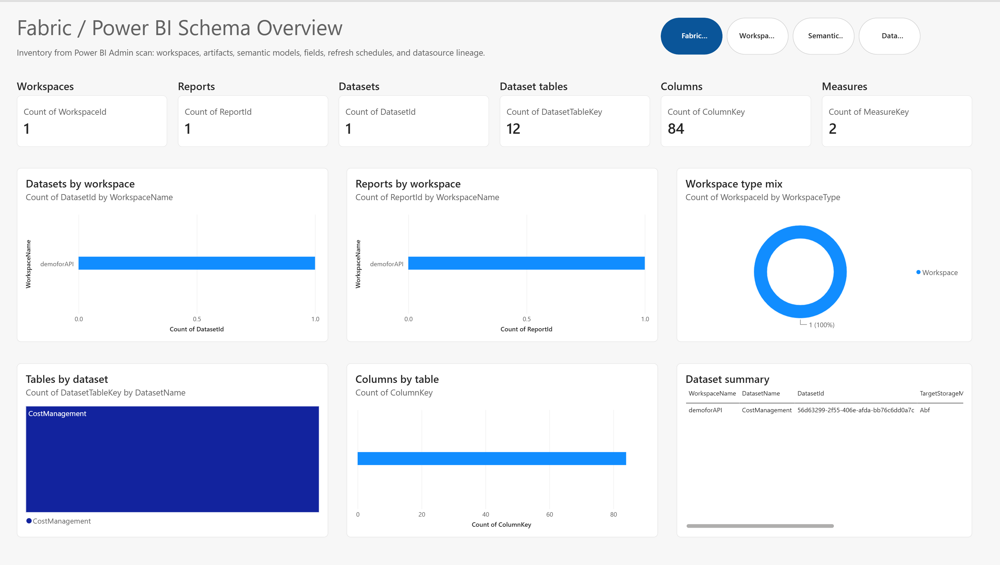
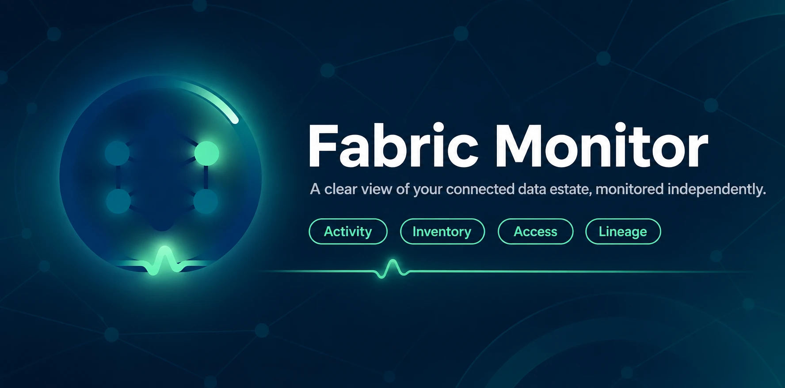

Separate collection
from Fabric compute.
The external Python path doesn't start a Fabric Spark notebook to gather metadata. Put collection on infrastructure your operations team already knows how to run.
Explore runtime choicesMicrosoft Fabric + Power BI
Your monitoring collector shouldn't have to live inside the platform it observes.
Run Python collectors locally, in a container, or with Azure Functions. Retain the evidence in your own storage. Bring Fabric notebooks into the picture when you want analytics—not because collection requires them.
Code you can inspect. Customer-controlled deployment. No hosted monitoring service.
Visibility, without another runtime dependency
For platform teams who need to understand what's happening, what exists, and what deserves a closer look.
The external Python path doesn't start a Fabric Spark notebook to gather metadata. Put collection on infrastructure your operations team already knows how to run.
Explore runtime choicesRetain collected observations in storage you control. Revisit what was actually captured rather than assuming today's inventory explains yesterday's event.
Follow the evidence pathBring activity, inventory, access, jobs and dependencies into an investigation—with collection gaps visible, not quietly interpreted as healthy results.
Walk through an investigationFrom platform signals to practical questions
Enable the modules relevant to your estate. Coverage depends on the selected collectors and their individual authorization boundaries.
Review retained operations, reported actors and outcomes. Use audit identifiers as an investigation starting point.
Explore workspaces, items, semantic models, tables, columns and measures from supported inventory and scanner evidence.
Inspect workspace roles, selected item grants and directory context. Observed grants are not a complete effective-permissions calculation.
Investigate retained job and refresh observations, with polling outcomes alongside them so missing history stays visible.
Trace scanner relationships and supported static references. Inferred dependencies indicate potential impact, not proven execution.
Bring capacity metrics, gateways, tenant settings and other selected operational signals into the conversation.
Not Admin-API-only: workspace/item Fabric APIs and Microsoft Graph have separate grants and limits. Read the API and permission boundaries
One evidence journey. Separate responsibilities.
The collection layer can stand on its own. The optional Lakehouse path adds normalization and investigation without fetching the same evidence from the APIs again.
Choose an execution host, authorize selected APIs, and configure module schedules and scope.
Local / container / FunctionsKeep raw JSON and its available collection context. Local and Blob output don't require a Fabric notebook.
Your controlled storageLand evidence in a Lakehouse, then use the analytics notebooks to resolve identities and evidence-backed links.
Fabric compute required hereOrganize retained events into cases and traces. Keep ambiguity, provenance and unresolved gaps alongside results.
Evidence, not assumed causalityAlready use Fabric notebooks? Keep them. This is about runtime choice, not replacing a workflow that works. Notebook-hosted collection and a separate analytics suite are also available.
Understand Bronze, Silver & GoldSee the solution
An introductory demo, practical reading paths, and an evolving collection of learning material.
Video unavailable in this browser. Open the MP4 or use the text overview above.
From a local proof of concept to hosted operation.
A synthetic walkthrough, including where the trace stops.
Seven draft slide decks, clearly separated from finished video.
Evidence made explorable
The Catalog Power BI project provides a visual starting point for workspace inventory, semantic-model structure, data sources and refresh settings.
Reporting projects and optional notebook investigations serve different evidence paths. The newer Silver/Gold investigation tables do not automatically rebind or update existing reports.
Explore the Catalog report guide
Built around honest evidence
A failed or uncollected source is a coverage gap, not evidence that nothing happened.
Matching identifiers can support a link. They don't prove who initiated every downstream action.
Validate your identity, network, storage and Fabric runtime before relying on scheduled results.
Not for external Python collection to local files or Azure Blob. This removes the notebook/Spark runtime requirement for that collection path, not the monitored APIs' requirements. Some signals depend on available capacities and supported resources. Keep monitored capacities on for accurate assessment. Fabric-hosted notebooks, Lakehouse analytics and reporting may still require capacity and licensing.
No. Catalog uses Admin Scanner APIs, while selected jobs, definitions, connections and other features use non-Admin Fabric APIs. Graph directory data uses separate Microsoft Graph permissions. Tenant discovery is not universal resource access. Review each module's scope, authorization, history windows and unsupported resources in the configuration reference.
No. Fabric Monitor is a customer-deployed monitoring accelerator. You operate its identity, host, scheduling, storage, retention and acceptance testing. It retains selected observations and supports investigation; it does not promise complete visibility, automatic remediation or an operational SLA.
The separate audit export notebook prepares a consolidated Delta table and JSON Lines files for a Splunk handoff. It runs in Fabric and is distinct from the numbered analytics suite. JSONL export is not a configured Splunk ingestion service. Eventhouse/KQL access and external delivery require separate architecture, authorization and validation; no Event Hubs publisher is implemented. See the integration guide.
Commercial, GCC, GCC High and DoD endpoint profiles are documented. Current non-Commercial runs skip Fabric REST and OneLake modules; Power BI and Graph coverage depends on the selected cloud. These are configuration boundaries, not a claim of validation in every environment. Consult the cloud environment reference.

Start small. Make the evidence useful.
Choose a few questions, authorize the right collectors, and build from there.